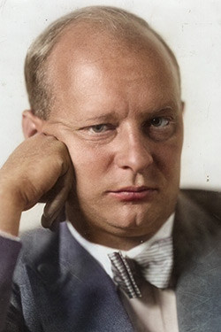

THE
TRIADIC
BALLET
An avant-garde dance piece designed and choreographed by the Bauhaus artist Oskar Schlemmer. Transcending traditional performances, Das Triadische Ballett transforms the human form into a medium to explore the relationship between the body and space.
The production stripped off all ornamental amenities associated with traditional ballet, prioritizing geometric and restrictive components. First premiered in 1922, it combines dance, costume, music, and set design into the ultimate Gesamtkunstwerk.
RULE
OF
THREE
THEME
The term "triadic" signifies the foundational concept of the trinity that underpins the structure of the ballet.
The term "triadic" signifies the foundational concept of the trinity that underpins the structure of the ballet.
PARTICIPANTS
Features 3 dancers:
2 males, 1 female
STRUCTURE
Divided into 3 unique sections
SPECTRUM
Defines 3 colors:
yellow, pink, black
THREE
-
PART
STAGE
VISION
The Triadic Ballet is a plotless dance, yet follows a progression of distinct themes, using color theory to set the emotional tone for each act.
The Triadic Ballet is a plotless dance, yet follows a progression of distinct themes, using color theory to set the emotional tone for each act.
ATTIRE
AS
ART
Schlemmer crafted 18 bizarre costumes using unconventional, heavy materials to form exaggerated silhouettes. Each costume was subordinate to geometric shapes such as cubes, pyramids, spheres, and cylinders to dehumanize the dancers into marionette-like figurines. Dancers were restricted in movement, forced to perform a controlled and reserved choreography in contrast to the gracefulness and fluidity of classical ballet. Tragically, more than half of the costumes were destroyed over time, with the remaining currently preserved in the Neue Staatsgalerie in Stuttgart, Germany.
ORIGINAL
1926
SCORE
When the Triadic Ballet made its debut in 1922, Schlemmer utilized an assortment of classical music before collaborating with Paul Hindemith to compose a new score for the performance. Hindemith experimented with mechanical organs to craft a unique score.
Only 8 minutes of the original music have survived; however, Hindemith had incorporated fragments of the score into the Suite for Mechanical Organ.
